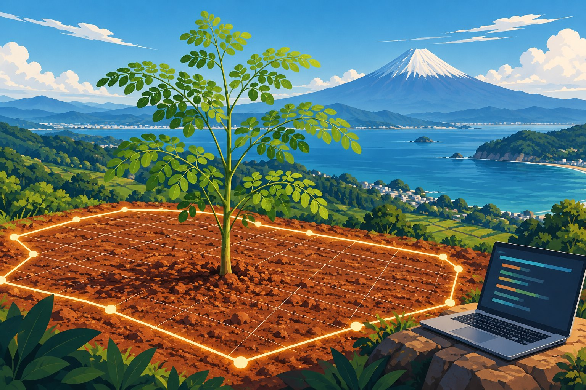

Earthful Magic Builder Hackathon
Agentic Coding on the Coast
海辺のエージェンティック・コーディング
📍 Zushi / Hayama area · Sunday 29 November 2026 · 10:00–21:00 (18:00–21:00 optional)
📍 逗子・葉山エリア · 2026年11月29日（日） · 10:00〜21:00（18:00〜21:00 は任意参加）
A one-day, in-person product sprint where ~40 engineers, designers, and builders work in small teams with AI coding agents to build working prototypes for a real climate startup.
The 2026 edition of ShoCode is the Earthful Magic Builder Hackathon, hosted by Earthful Magic and Cor-an Holdings and co-hosted by ShoCode with AI Tinkerers Japan. Earthful Magic helps small, often invisible farmers in Africa and Southeast Asia become export-ready by growing Moringa, a superfood tree, funded in part by carbon credits issued under a Verra methodology. Farmers earn a salary, and the world gets a high-quality superfood.
Getting from bare land to a registered carbon project is unclear, expensive, and slow, and much of the pain is wading through stacks of PDFs to check whether land qualifies. Your prototypes may feed directly into Earthful Magic's product development, and high-potential teams can get follow-on support.
エンジニア、デザイナー、ビルダー約40名が少人数のチームを組み、AI コーディングエージェントと共に、実在する気候テックスタートアップのために動くプロトタイプを作る、1日集中・対面形式のプロダクトスプリントです。
2026年の ShoCode は Earthful Magic ビルダーハッカソンとして開催します。主催は Earthful Magic と Cor-an Holdings、共催は ShoCode と AI Tinkerers Japan です。Earthful Magic は、アフリカや東南アジアの小規模で「見えない」農家が、スーパーフードの樹木モリンガを育てて輸出できるよう支援しています。その資金の一部は Verra の方法論に基づくカーボンクレジットでまかないます。農家は給与を得て、世界は高品質なスーパーフードを得られます。
何もない土地から登録済みのカーボンプロジェクトに至る道のりは、不透明で、高コストで、時間がかかります。特に、土地が適格かどうかを大量の PDF で確認する作業が大きな負担です。作ったプロトタイプは Earthful Magic のプロダクト開発に直接活かされる可能性があり、有望なチームには継続的な支援の機会があります。
You leave with the skill, the network, and the story.
持ち帰るのは、スキル、人とのつながり、そして語れる経験。
Three people, their agents, one build, six hours. The skill every team needs next.
Real farmers, real carbon projects. Your code can ship in Earthful Magic's product.
Carbon developers, climate investors, founders. They judge your demo and stay for dinner.
Carbon credits, land eligibility, regenerative farming, explained by people who do it.
40 builders, two languages, lunch on us, the sea outside.
3人とそれぞれのエージェント、ひとつのビルド、6時間。次にどのチームにも必要になるスキル。
実在する農家、実在するカーボンプロジェクト。あなたのコードが Earthful Magic のプロダクトになるかもしれません。
カーボン開発者、気候テック投資家、創業者。デモを審査し、ディナーにも同席します。
カーボンクレジット、土地適格性、環境再生型農業。現場のプロが解説します。
約40名、2つの言語、ランチ付き、窓の外は海。
Teams of 1 to 3 pick a stream during team setup on the morning of the event.
1〜3名のチームが、当日朝のチーム編成の時間にストリームを選びます。
Land sourcing for carbon credit developers.
Methodology eligibility, crop suitability, and revenue projection.
カーボンクレジット開発者向けの土地ソーシング。
方法論の適格性、作物の適性、収益予測。
Doors open at 10:00. The hackathon runs to 18:00; dinner from 18:00 to 21:00 is optional.
10:00 開場。ハッカソンは 18:00 まで、18:00〜21:00 のディナーは任意参加です。
Check-in, a plain-language briefing on the mission, the carbon methodology, and farmer impact, then team setup and stream selection.
Heads-down building with AI coding agents. Grab-and-build lunch at noon, on us.
Working demos for industry judges, clean-up, then awards and the Earthful Magic Bounty at 17:00. From 18:00, optional self-paid dinner with builders, judges, and partners until 21:00.
受付の後、ミッション、カーボンクレジットの方法論、農家へのインパクトをわかりやすく説明します。その後チーム編成とストリーム選択。
AI コーディングエージェントと集中してビルド。お昼は作りながら食べられるランチ（主催者提供）。
業界の審査員に動くデモを披露。片付けの後、17:00 に表彰と Earthful Magic バウンティの発表。18:00 から 21:00 まで、ビルダー、審査員、パートナーとの任意参加・各自負担のディナー。
Judged by carbon project developers, forest developers, agricultural supply chain operators, and climate-tech investors. Judges name a winner in each stream. Separately, Earthful Magic offers an optional Earthful Magic Bounty of ¥10,000 to one team (possibly a second). Claiming it means transferring the copyright in that submission to Earthful Magic Pte. Ltd.; teams that do not enter keep their IP. See the hackathon rules.
カーボンプロジェクト開発者、森林開発者、農業サプライチェーンの事業者、気候テック投資家が審査し、各ストリームから1チームを選びます。これとは別に、Earthful Magic が任意参加の Earthful Magic バウンティ（1チームに1万円、場合により2チーム目も）を提供します。受け取るには提出物の著作権を Earthful Magic Pte. Ltd. に譲渡する必要があります。参加しないチームの知的財産はそのまま残ります。詳しくはハッカソンルールをご覧ください。
This event is for people who make things. If you ship code, design systems, or prototype ideas, you belong here.
Demos over slides. Show something that runs, built for a real problem.
We partner with organizations that share the mission, but ShoCode belongs to the community.
Materials in both Japanese and English. Participate in whichever language you're most comfortable with.
このイベントは、ものを作る人のためのイベント。コードを書く人、システムを設計する人、アイデアをプロトタイプする人。あなたの場所です。
スライドよりデモ。実際の課題のために作った、動くものを見せてください。
ミッションを共有するパートナーと共に運営しますが、ShoCode はコミュニティのものです。
資料は日本語と英語の両方で。あなたが最も快適な言語でご参加ください。
ShoCode happens where Tokyo ends and the sea begins. The venue is in the Zushi / Hayama area, minutes from the beach. Late November is when the air clears and Mount Fuji shows across Sagami Bay.
That is a deliberate choice. Build all day with the ocean down the street, step out to the water before demos, and if you stay for dinner, eat by the sea with the people who judged your work. Come for the code, stay for the sea.
ShoCode の舞台は、東京が終わり海が始まる場所。会場は逗子・葉山エリア、海まですぐの場所です。11月下旬は空気が澄み、相模湾の向こうに富士山が姿を見せる季節です。
この立地は意図的な選択です。海がすぐそこにある部屋で一日ビルドし、デモの前に海辺まで足を伸ばし、ディナーに残るなら、あなたの作品を審査した人たちと海のそばで食事を。コードのために来て、海のために留まってください。

Registration is on Luma. Lunch is included; dinner is optional and self-paid. Space is limited to about 40 builders, so registrations are reviewed. Accepted participants receive a packet with an introduction to Earthful Magic, the challenge briefing, and what to bring.
参加登録は Luma で受け付けます。ランチ付き、ディナーは任意参加・各自負担です。定員は約40名のため、登録内容を確認のうえ参加を確定します。参加が確定した方には、Earthful Magic の紹介、チャレンジのブリーフィング、持ち物をまとめた参加者パケットをお送りします。
Your code, your rights. You keep the IP in your submission. Earthful Magic Pte. Ltd. receives a non-exclusive license to use it. Materials Earthful Magic provides stay theirs and confidential. Teams agree not to publish their project for 60 days, during which Earthful Magic may open talks to acquire it under a separate agreement. The ¥10,000 bounty is optional and involves a copyright transfer. The full terms are in the hackathon rules; registering means you accept them.
あなたのコード、あなたの権利。 提出物の知的財産はあなたに残ります。Earthful Magic Pte. Ltd. は非独占的な利用ライセンスを得ます。Earthful Magic が提供する資料は同社のものであり、秘密情報です。チームはイベント後60日間プロジェクトを公開せず、その間 Earthful Magic は別途契約による取得交渉を申し入れることができます。1万円のバウンティは任意参加で、著作権の譲渡を伴います。正式な条件はハッカソンルールに記載しています。登録をもって同意したものとみなします。
Register on Luma Luma で登録する